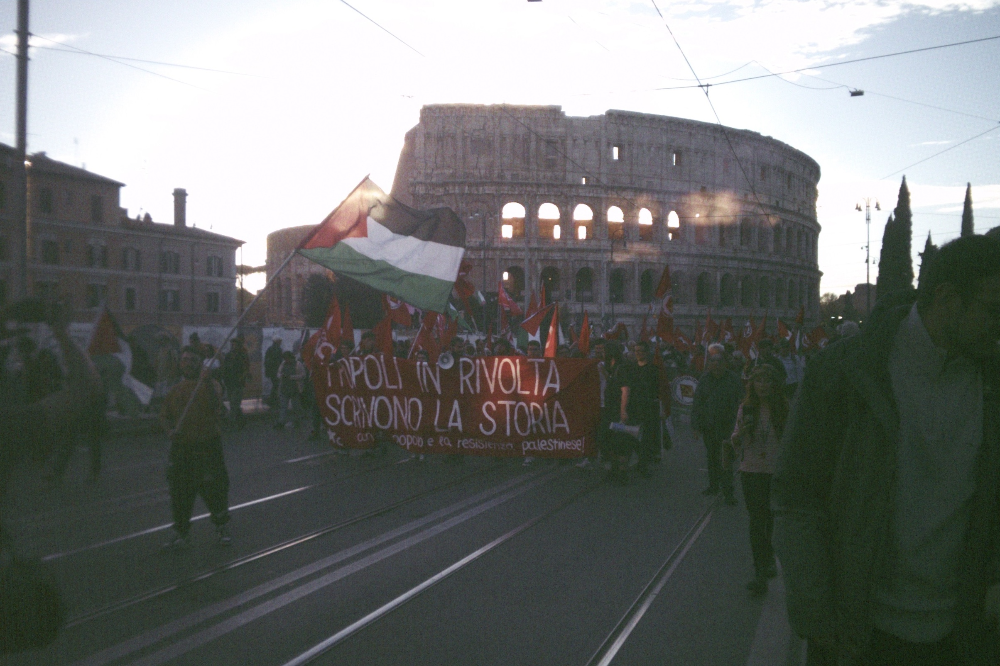
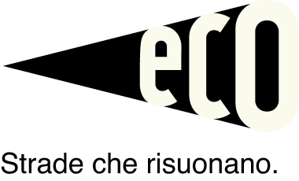
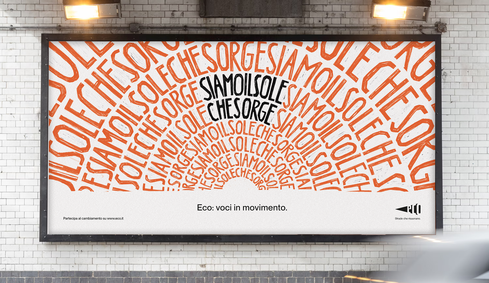
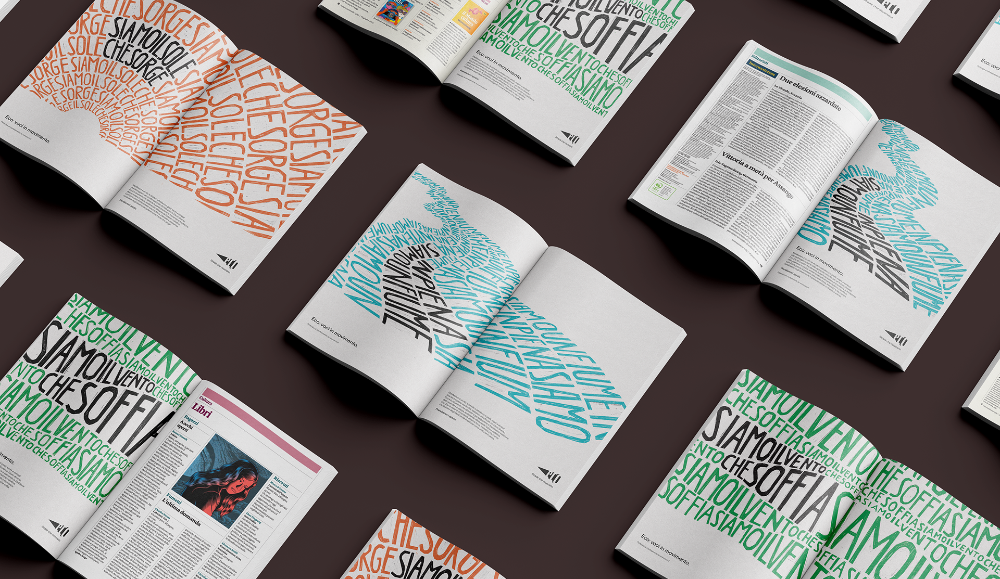
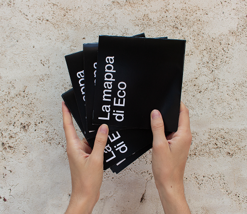
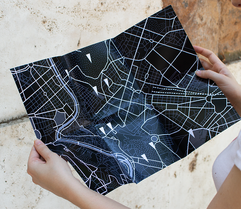

Eco è un progetto di systemic design pensato per diffondere conoscenza e consapevolezza rispetto all'importanza storica
delle manifestazioni e al ruolo che hanno rivestito nei cambiamenti sociali, politici ed economici. È inoltre uno strumento di supporto attivo alla protesta che aiuta a riscoprire l'atto di scendere in piazza come pratica utile per esercitare il diritto a far sentire la propria voce.


Come rappresentare la forza di chi protesta prendendo
le distanze dall'immaginario violento che si associa
alle manifestazioni? Parlando di energia.
La forza delle voci dei cortei è paragonata all'energia
della natura che, nelle sue varie espressioni, diventa metafora
del potere della comunità.


L'app fornisce agli utenti uno strumento per partecipare
attivamente alle proteste: come una piattaforma di eventi,
ma dedicata alle manifestazioni.
Il sito ha una funzione ludico-divulgativa, dove la partecipazione
è legata alla scoperta della cultura storica del manifestare.
Con gli Ecopoints il progetto esce dalle piattaforme digitali, inserendosi attivamente nel tessuto sociale. Coinvolgendo le attività locali, scoprire le tappe diventa per l'utente una caccia al tesoro,
dove per accedere ai contenuti nascosti è necessario trovare
ed inquadrare il logo di Eco. Negli Ecopoints oltre all'acquisto
dei gadget si può richiedere la mappa cartacea
e l'adesivo della tappa.

